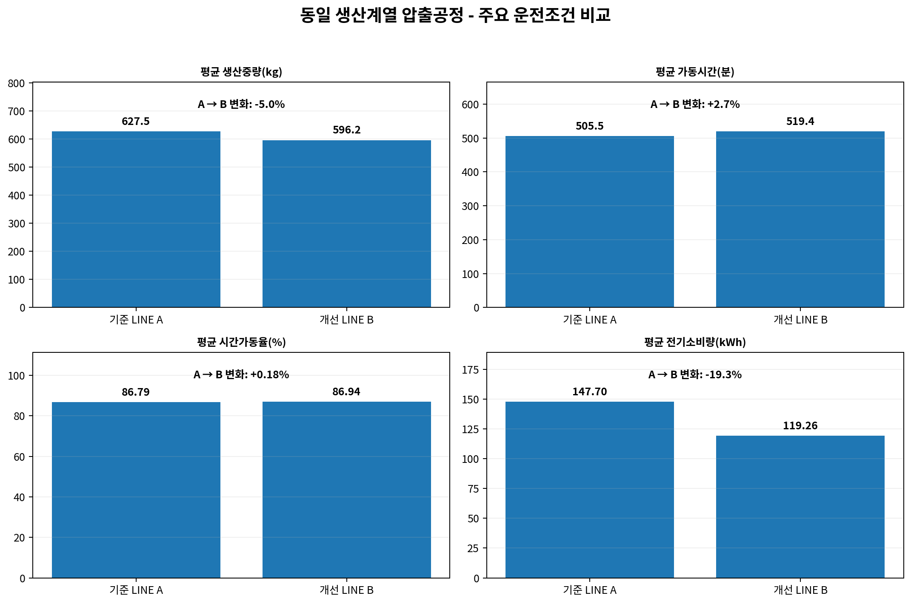
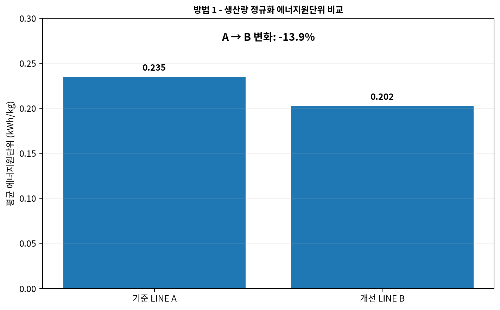
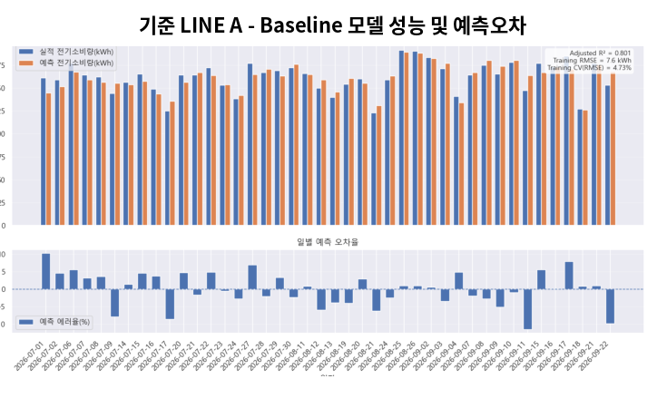
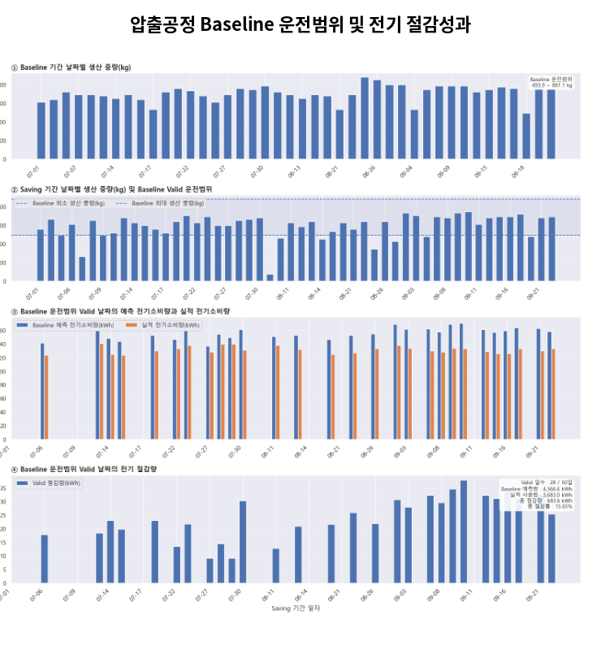

자동차부품 압출공정의 에너지절감 M&V:
원단위 정규화와 회귀 Baseline의 이중 검증
생산량과 운전조건이 매번 달라지는 제조공정에서는 “전력사용량이 줄었다”는 사실만으로 절감성과를 증명하기 어렵습니다. 이 사례는 동일 생산계열의 두 압출 LINE을 대상으로 생산량 정규화 원단위 비교와 다변수 회귀 Baseline을 함께 적용하여, 개선 방향과 절감량을 서로 다른 방법으로 교차 검증한 사례입니다.
1. 사례 개요와 M&V 과제
국내 자동차부품 제조 A사의 동일 생산계열 압출공정에서 기준 LINE A는 기존 운전조건을 유지하고, 개선 LINE B에는 에너지절감 항목이 적용되었습니다. 고객명, 공장명 및 실제 LINE ID는 공개용 CASE에서 비식별 처리했습니다.
개선 LINE B의 평균 전기소비량은 기준 LINE A보다 낮았지만, 평균 생산중량도 함께 낮았습니다. 따라서 절대 전력사용량의 감소분에는 진짜 효율개선과 생산량 감소효과가 동시에 포함될 수 있습니다. 제조공정 M&V의 핵심은 이 두 효과를 분리하는 것입니다.
생산량과 가동조건이 달라지는 제조공정에서 “개선하지 않았다면 얼마를 사용했을 것인가?”를 어떻게 정의하고, 실제 사용량과의 차이를 어떻게 절감량으로 증명할 것인가?
2. 제조공정 M&V의 기본 절차
Measurement Boundary
비교할 LINE, 공정, 전력계측 범위를 고정합니다.
영향인자 선정
생산중량, 가동시간, 시간가동율 등 에너지 사용에 영향을 주는 변수를 확인합니다.
비교가능성 확보
동일 생산범위를 적용하거나 Baseline의 유효 운전범위를 정의합니다.
Baseline 구축
원단위 또는 회귀모델로 개선 미적용 시 정상사용량을 정의합니다.
Adjusted Baseline
개선기간의 실제 생산·운전조건을 Baseline에 입력해 조정 기준사용량을 계산합니다.
절감성과 검증
Adjusted Baseline - Actual로 절감량을 계산하고 적용범위와 모델 품질을 함께 제시합니다.
3. 방법 1 - 생산량 정규화 에너지원단위 비교
첫 번째 방법은 가장 이해하기 쉬운 M&V 접근입니다. 기준 LINE A의 데이터를 개선 LINE B의 생산중량 범위와 동일하게 제한한 뒤, 단위 생산량당 전력사용량인 kWh/kg를 비교합니다. 생산량이 다른 두 기간의 절대 전력사용량을 직접 비교하는 대신, 생산량으로 정규화해 효율을 비교하는 방법입니다.

| 지표 | 기준 LINE A | 개선 LINE B | 변화 |
|---|---|---|---|
| 평균 전기소비량 | 147.70 kWh | 119.26 kWh | -19.3% |
| 평균 생산중량 | 627.45 kg | 596.21 kg | -5.0% |
| 평균 가동시간 | 505.5 min | 519.4 min | +2.7% |
| 평균 시간가동율 | 86.79% | 86.94% | +0.18% |
| 평균 에너지원단위 | 0.234932 kWh/kg | 0.202304 kWh/kg | -13.9% |

또한 평균 전기소비량 / 평균 생산중량으로 계산한 가중 원단위는 약 15.0% 개선되어 평균 개별 원단위의 13.9%와 같은 방향을 보였습니다. 이 방법은 현장 담당자가 빠르게 이해하고 설명할 수 있다는 장점이 있습니다.
산식이 단순하고 직관적이며, 생산량 차이를 빠르게 보정할 수 있습니다. 데이터가 많지 않은 초기 실증이나 현장 커뮤니케이션에 유용합니다.
생산중량 외의 가동율·제품 Mix·공정조건 등이 에너지에 미치는 영향을 충분히 분리하기 어렵습니다. 절감량을 kWh로 직접 산정할 때도 추가 가정이 필요합니다.
4. 방법 2 - 다변수 회귀 Baseline 기반 Adjusted M&V
두 번째 방법은 개선 미적용 상태의 기준 LINE A에서 정상운전 데이터를 선별한 뒤, 에너지 사용량을 설명하는 Baseline 회귀모델을 구축합니다. 이상치와 영향점을 정제하고 OLS·WLS·GLSAR를 비교했으며, 최종 M&V에는 AR(1) 오차구조를 반영한 GLSAR 모델을 적용했습니다.
| 모델 평가항목 | 결과 | 의미 |
|---|---|---|
| Adjusted R² | 0.801 | 주요 운전변수가 전력사용량 변동을 상당 부분 설명 |
| RMSE | 7.64 kWh | Baseline의 건별 평균 예측오차 수준 |
| CV(RMSE) | 4.73% | 평균 사용량 대비 예측오차가 낮은 편 |
| VIF | 1.089 / 1.089 | 독립변수 간 다중공선성 위험이 낮음 |
| Durbin-Watson | 1.958 | 잔차 자기상관이 낮은 수준 |

Baseline 적용범위
| 운전변수 | 기준 LINE A Baseline 범위 | 개선 LINE B 관측 범위 |
|---|---|---|
| 생산중량 | 493.95 ~ 881.10 kg | 80.10 ~ 747.60 kg |
| 시간가동율 | 80.00 ~ 95.45% | 65.15 ~ 95.83% |
| 전기소비량* | 123.00 ~ 191.00 kWh | 10.00 ~ 141.00 kWh |
* 실무 적용 시 주의
원 분석코드는 Valid 판정에 실적 전기소비량까지 포함했습니다.
일반적인 M&V에서는 Baseline 적용범위를
독립변수와 운전조건 중심으로 정의하는 것이 더 논리적이므로,
다른 현장에 재적용할 때는 Valid 규칙을 사전에 명문화하는 것이 좋습니다.

| 성과항목 | 결과 |
|---|---|
| 개선기간 전체 데이터 | 50건 |
| Valid 데이터 | 28건 (56.0%) |
| Invalid 데이터 | 22건 (44.0%) |
| Valid Baseline 예측량 | 4,366.59 kWh |
| Valid 실제 사용량 | 3,683.00 kWh |
| 총 절감량 | 683.59 kWh |
| 총 절감률 | 15.65% |
생산중량과 시간가동율 등 여러 영향인자를 동시에 보정할 수 있고, 절감효과를 %뿐 아니라 kWh로 직접 산출할 수 있어 대외 성과검증에 적합합니다.
Baseline 데이터 품질, 모델구조, 잔차진단, 적용범위가 결과 신뢰도를 좌우합니다. 개선기간의 상당 부분이 Baseline 범위를 벗어나면 모델 확대 또는 별도 층화가 필요합니다.
5. 두 가지 방법은 어떻게 다르고, 언제 써야 하나?
| 비교항목 | 방법 1 · 원단위 정규화 | 방법 2 · 회귀 Baseline |
|---|---|---|
| 핵심 질문 | 단위 생산량당 에너지효율이 좋아졌는가? | 동일 생산·운전조건이라면 얼마를 썼어야 하는가? |
| 필요 데이터 | 에너지 + 생산량 | 에너지 + 생산량 + 주요 운전변수 |
| 난이도 | 낮음 | 중~높음 |
| 산출값 | 원단위 개선률 | Adjusted Baseline, 절감량(kWh), 절감률 |
| 적합한 용도 | 빠른 진단, 1차 검증, 현장 설명 | 최종 M&V, 성과보고, 투자효과 검증 |
| 이 사례의 결과 | 13.9% 개선 | 683.59 kWh, 15.65% 절감 |
두 결과가 완전히 같은 값이 될 필요는 없습니다. 방법 1은 생산량 하나로 정규화하고, 방법 2는 생산중량과 시간가동율을 동시에 반영하며 Valid 조건까지 적용하기 때문입니다. 중요한 것은 두 방법이 모두 “개선”이라는 같은 방향을 지지하고, 보다 엄격한 방법에서 절감량을 정량화할 수 있다는 점입니다.
6. 이 사례에서 배울 점
- 절대 전력사용량 감소율을 그대로 절감률로 사용하지 않는다.
- 생산량 차이는 최소한 원단위로 정규화한다.
- 가동율·공정조건의 영향이 크면 다변수 Baseline을 사용한다.
- Baseline 모델은 R²만 보지 말고 RMSE·CV(RMSE)·VIF·잔차를 함께 본다.
- 개선기간이 Baseline 범위 밖이면 억지로 외삽하지 않는다.
- 간편 M&V와 정밀 M&V를 함께 쓰면 결과 설명력이 좋아진다.
- 절감률(%)뿐 아니라 검증된 절감량(kWh)을 함께 제시한다.
- 고객·공장·설비 식별정보는 공개 CASE에서 비식별 처리한다.
7. 다른 제조현장에 적용할 때 고려사항
| 검토항목 | 적용 시 확인사항 |
|---|---|
| 동일 제품·Mix | 제품 규격과 소재, 금형, 품질조건이 에너지 사용량에 영향을 주는지 확인 |
| 생산량 정의 | 수량보다 생산중량이 적절한지, 또는 양품수량·LOT·가동시간이 더 적합한지 검토 |
| 계측 Boundary | 공정설비만 측정하는지, 부대설비까지 포함하는지 개선 전·후 동일하게 유지 |
| 계측기 신뢰성 | 전력계·유량계·생산정보의 시간동기와 교정상태 확인 |
| Baseline 기간 | 정상운전과 충분한 부하범위를 포함하고 이상정지·시험생산은 분리 |
| 모델 선택 | 단순 선형, 다중회귀, WLS, GLSAR 등은 잔차·이분산·자기상관 진단에 따라 선택 |
| 적용범위 | 개선기간 운전조건이 Baseline 범위에 들어오는지 사전 정의 |
| 비정례 조정 | 설비교체, 제품변경, 작업조 변경 등 구조적 변화가 있으면 별도 조정 |
원단위로 빠르게 방향 확인 → 생산·운전조건과 전력의 관계 탐색 → Baseline 후보모델 비교 → 적용범위 정의 → Adjusted Baseline 계산 → 누적 절감량과 불확도 보고.
8. 공개 범위와 해석상의 제한
본 CASE는 실제 M&V 보고서 2종을 기반으로 구성했지만 고객명, 공장명, 실제 LINE ID는 모두 비식별 처리했습니다. 공개 수치는 두 보고서에서 검증된 분석결과를 유지하되, 회사 전체 또는 다른 공정 전체의 절감률로 확대 해석해서는 안 됩니다.
특히 15.65%는 회귀 Baseline 적용범위 내 Valid 데이터에 대한 결과입니다. 개선기간 전체 50건 중 28건이 현재 분석코드의 Valid 조건을 만족했으므로, 다른 현장에서는 Baseline 범위를 더 넓게 확보하거나 부하구간별 모델을 추가하는 방식으로 평가 커버리지를 높일 수 있습니다.
제조공정의 절감량을 “보이는 감소”가 아니라 “검증 가능한 성과”로 만들기
생산데이터와 EMS 전력데이터를 연결하면, 공정별 Baseline을 구축하고 개선효과를 정량적으로 검증할 수 있습니다. 유사 공정의 Baseline·M&V 설계, 데이터 분석, 교육·연구 협력이 필요하면 문의할 수 있습니다.
전문 상담·협력 문의 CASE STUDIES 전체 보기